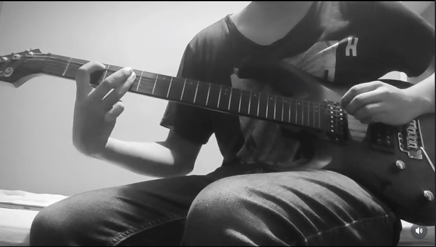
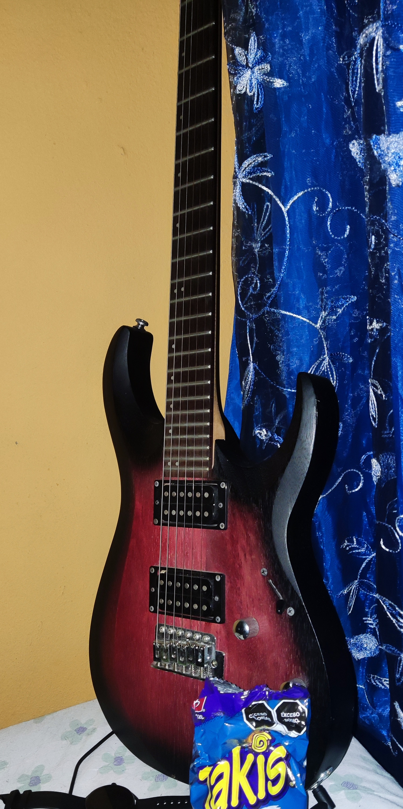

Tocar Guitarra
Un pasatiempo con el que llevo ya 10 años es tocar la guitarra. Me gusta tocar la guitarra porque me permite expresarme creativamente, relajarme y disfrutar de la música. Además, tocar la guitarra me ha ayudado a desarrollar habilidades como la coordinación, la paciencia y la perseverancia, ya que aprender a tocar un instrumento requiere tiempo y dedicación.
¿Como me llamo la atención?
Empecé a interesarme en la guitarra gracias a videojuegos rítmicos como Guitar Hero y Clone Hero. Estos juegos me introdujeron a la música y me motivaron a aprender a tocar la guitarra de verdad. Al principio, solo quería poder tocar las canciones que me gustaban en el juego, pero con el tiempo, desarrollé un verdadero gusto por la guitarra y la música en general. Ahora, tocar la guitarra es una parte importante de mi vida y disfruto aprendiendo nuevas canciones y técnicas.
Aunque empece con guitarra acustica, pero desde siempre mis canciones preferidas han tenido guitarra electrica por lo que nunca estuve comodo con ella, eso no significa que en la actualidad no me gusten las canciones acusticas ni mucho menos, pero eso no era lo que buscaba. Luego de 4 años, en el me compre una guitarra electrica Squier Stratocaster la cual fue mi guitarra principal por otros 4 años y con la que aprendi a tocar muchas de las canciones que me se actualmente.

En el me compre una guitarra electrica Cort X100, la cual es mi guitarra principal actualmente. Me gusta mucho esta guitarra por su sonido, su comodidad al tocarla y su estética.
A pesar de que me gusta mucho tocar la guitarra, hay periodos de tiempo en los que no me apetece tocarla, eso hace que pierda practica por lo que no suelo tocarla para otras personas. Sin embargo, disfruto mucho tocarla para mi mismo y a veces grabo videos tocando para compartirlos con amigos o en redes sociales.

Al comprar mi primera guitarra, también me compre un amplificador de guitarra, es un Fender Champion 100, el cual a pesar de haber comprado otros amplificadores mas pequeños para practicar, sigue siendo mi amplificador principal. Me gusta mucho este amplificador por su calidad de sonido ya que al no ser pequeño tiene un sonido más completo y potente, lo que me permite disfrutar al máximo de mi guitarra. Casi siempre mi gato se sube al amplificador y se queda ahí mientras toco, a veces hasta se duerme, lo cual me parece muy divertido y adorable.

Para complementar mi equipo de guitarra, también tengo algunos pedales de efectos. El pedal que más uso es el Zoom G1x Four, el cual es un pedal multiefectos que ofrece una amplia variedad de sonidos y efectos para guitarra. Me gusta mucho este pedal por su versatilidad y su facilidad de uso, lo que me permite experimentar con diferentes sonidos y estilos musicales. También tengo un pedal de overdrive llamado Cruzer by Crafter EF-OF, el cual me gusta usar para darle un sonido más cálido y saturado a mi guitarra.

En resumen, tocar la guitarra es un pasatiempo que me apasiona y me ha brindado muchas horas de diversión y satisfacción. Me gusta poder expresarme a través de la música y seguir aprendiendo nuevas canciones y técnicas para mejorar como guitarrista.